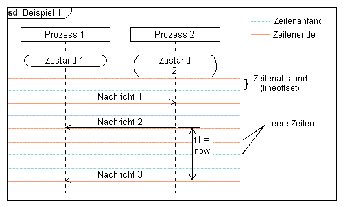

Syntaxbeispiel
Beispiel
Syntaxbeispiel
Beispiel
|
DiagramName: Beispiel 1 DiagramStyle: uml PageSize: 500, auto PageMargins: 10, 10, 10, 10 right: 150 process: p1, "Prozess 1" process: p2, "Prozess 2" state: p1, Zustand 1 state: p2, Zustand\n2; msg: p1, p2,Nachricht 1; msg: p2, p1, Nachricht 2 timerbegin: t1, p2, t1 = now,r; ; ; msg: p2, p1, Nachricht 3 timerend: t1 |
 |
Siehe auch